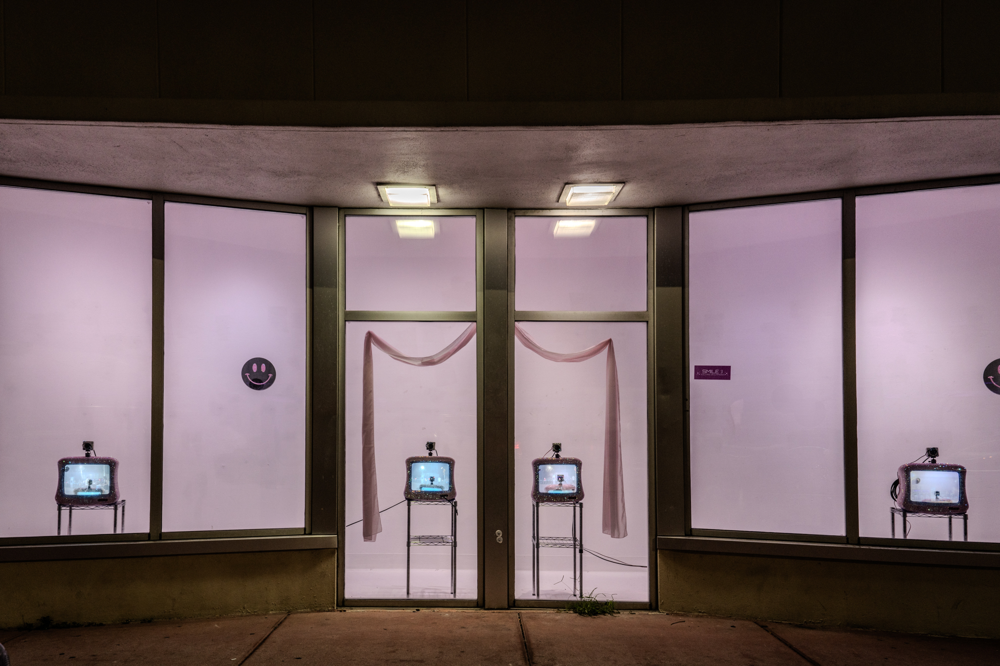
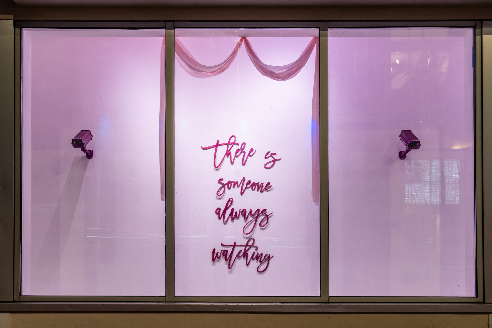

Walgreens Window Project - Bass Museum x Bakehouse Art Complex
Surveillance Cameras, Pink Disney TVs, Rhinestones, Mirrors
Miami Beach, Florida, 2024
"PrincessCam Dreamland" is an installation blending the aesthetics of childhood fantasy with the pervasive presence of surveillance. It features pink Disney-themed televisions and mirror-finished surveillance cameras, creating a dreamlike yet unsettling environment.
The project explores the tension between innocence and observation, questioning how our early experiences and media consumption condition us to accept monitoring as part of daily life. Through a girly, bedazzled aesthetic, the work draws viewers into a colorful world where the tools of surveillance are disguised as familiar, comforting objects.
"PrincessCam Dreamland" invites critical reflection on how surveillance technologies become embedded in our everyday environments, and how cuteness, nostalgia, and media imagery can neutralize the unease they might otherwise provoke.